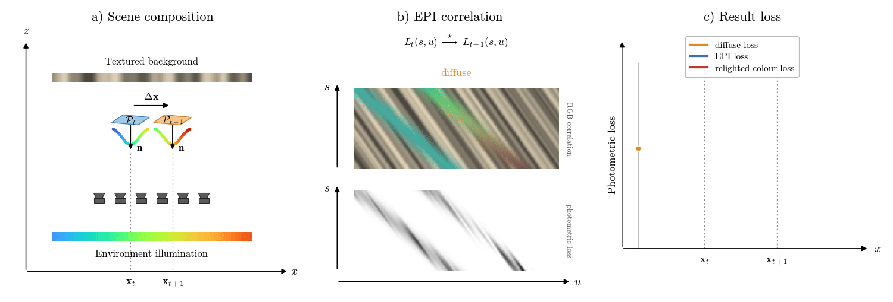
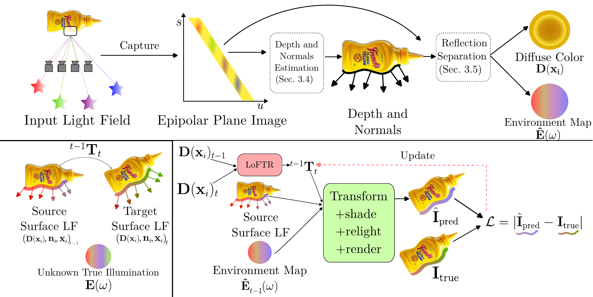
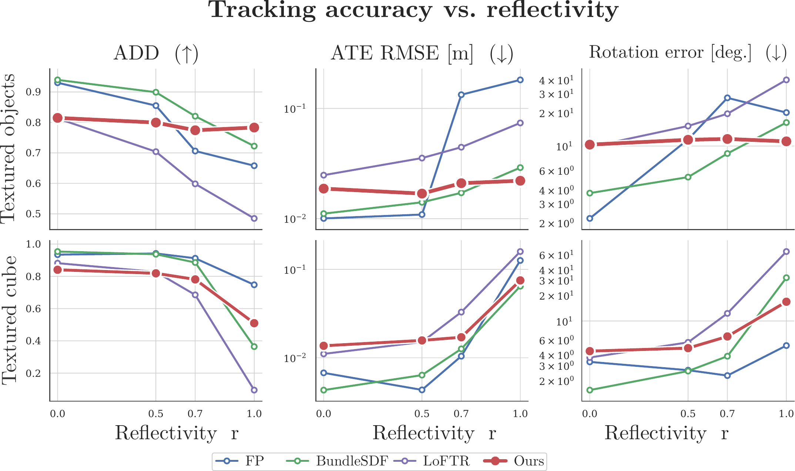
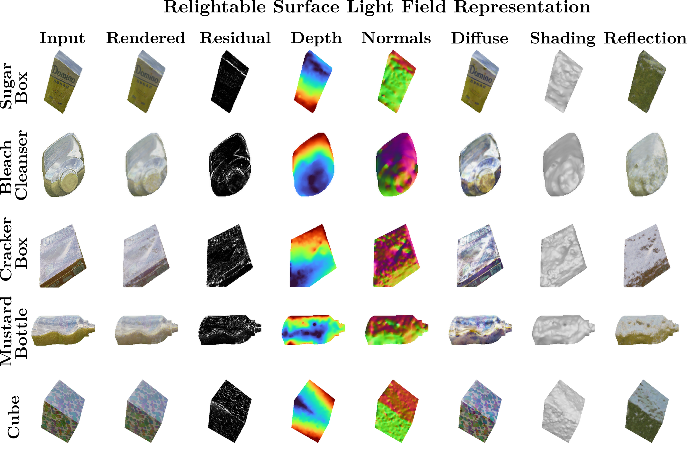
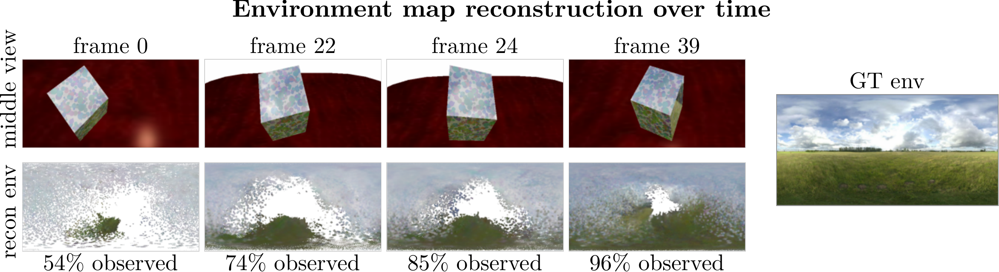
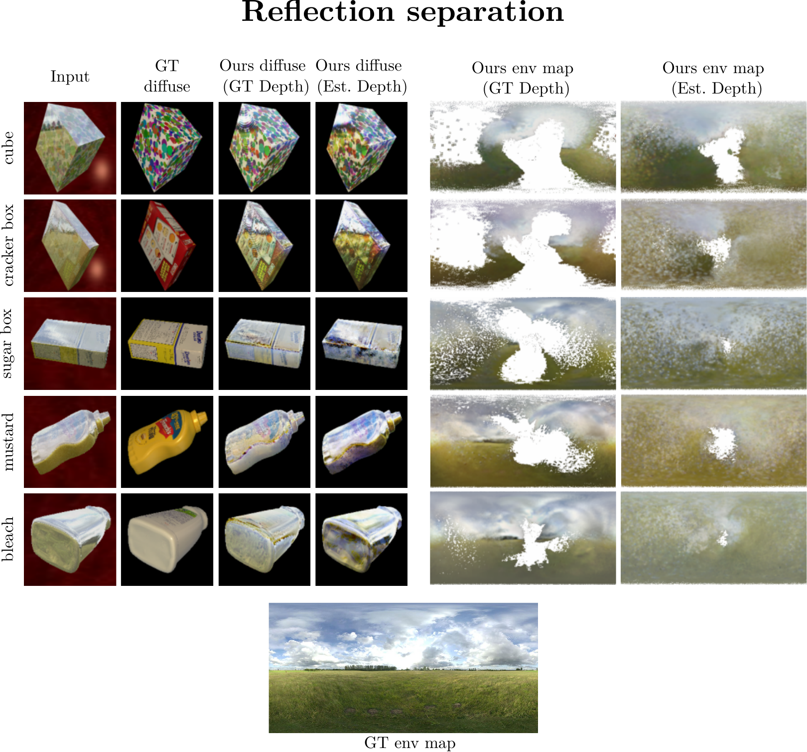
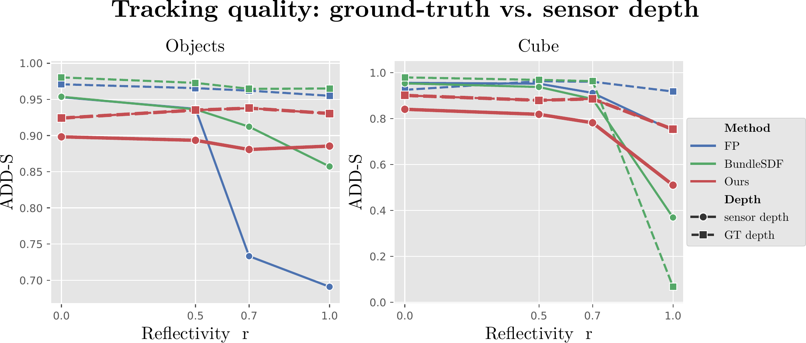

Tracking the 6DoF pose of a moving rigid object is fundamental to robotics and autonomous driving, but existing trackers assume that object appearance is stable across a sequence, an assumption that breaks down on reflective surfaces whose appearance changes as they mirror the environment. We introduce a light field based reflection-robust 6DoF tracker that turns this apparent nuisance into a pose cue. Per frame, our method recovers depth robustly against reflections, back-projects it into a point cloud, and estimates surface normals. It then decomposes the object's view-dependent appearance into a diffuse albedo and the environment map it reflects, resulting in a relightable surface light field. Starting from a coarse initialization, we relight it by the recovered environment map and optimize the pose on the photometric loss. Because a moving object mirrors new parts of the scene, the environment map fills in as the sequence proceeds, sharpening this signal over time. To evaluate this approach, we introduce a light field tracking dataset re-rendered from a robotic manipulation benchmark at four controlled reflectivity levels, each paired with simulated depth that reproduces how consumer RGB-D sensors fail on shiny surfaces. Our method matches strong baselines on diffuse objects and is the only one that holds its accuracy on fully reflective objects, where every baseline degrades.
In classical tracking, a moving point is identified by its color, which holds only for Lambertian surfaces. A light field samples a point's view-dependent color, but once the point moves and is re-illuminated, its angular color distribution shifts. A flatland toy example shows that the photometric loss of a moving reflective point craters to zero only when the point is relit under the surrounding environment — the reflection itself carries the motion.

Reflection as a signal for motion. (a) A reflective surface patch in flatland translates under environment illumination. (b) We sample the epipolar plane images before and after the motion and correlate the two. (c) Loss versus recovered translation: monocular color (orange) gives only a shallow dip, raw EPIs (blue) capture view-dependence but ignore re-illumination, and only the relit EPIs under the environment map (red) drive the loss to zero at the true coordinate.
Per frame, we segment the object and lift it to a surface light field: a reflection-robust depth estimate is back-projected to points, normals are fitted in 3D, and each point's color is observed from all subviews. Fitting a dichromatic reflection model to these view-dependent samples splits appearance into per-point diffuse albedos and a single environment map shared by all points, with a per-direction confidence recording which parts of the map have been observed. Consecutive surface light fields are aligned by a coarse feature match on the diffuse colors, followed by a refinement that transforms the source, relights it under the accumulated environment map, renders it, and descends the photometric residual against the observed frame. Because a moving object keeps mirroring new parts of the scene, the environment map fills in over the sequence, and the relighting signal sharpens as tracking proceeds.

Method overview. Top: each light field frame is processed, robustly against reflections, into depth and normals, and the view-dependent colors of the surface points are separated into per-point albedos and a shared environment map. Bottom left: consecutive surface light fields are related by an unknown transform; the true illumination is never observed, and in its place we carry the map accumulated over previous frames. Bottom right: matching the diffuse colors initializes the pose; the source is then transformed by the candidate pose, re-shaded and relit under the carried map, and rendered, and the residual against the observed target updates the pose.
To support controlled evaluation of tracking across reflectivity levels, we introduce a light field object tracking dataset built by re-rendering the YCBInEOAT robotic manipulation benchmark, which preserves compatibility with prior baselines while making object reflectivity controllable. Eight sequences cover four YCB objects under various spatial reorientations, each in two geometry variants: the original textured mesh and a cube of comparable scale that isolates reflectance effects from shape effects. Each frame is a 5×5 planar grid of 640×480 subviews at 5 mm baseline whose central subview coincides with the original YCBInEOAT viewpoint, accompanied by per-subview segmentation masks, ground truth depth, the 6D object pose, and calibration.
Each sequence is rendered at four reflectivity levels r ∈ {0.0, 0.5, 0.7, 1.0}. Geometry, lighting, and pose are identical across the four levels, so any difference in tracking performance can be attributed to reflectance alone. Ground truth depth hides how consumer RGB-D sensors fail on specular surfaces, so each frame is additionally paired with a simulated active-stereo depth map (stereo pair, projected infrared dot pattern, semi-global block matching), mimicking an Intel RealSense: as reflectivity increases, the recovered depth collapses into holes and outliers.
Explore the dataset. Every sequence is rendered at four reflectivity levels in two geometry variants, each with per-subview masks, ground truth depth, and simulated RGB-D sensor depth (watch it collapse as r grows). Sequences are named after the YCB object in the original YCBInEOAT recording; in the cube variant, the same sequence is rendered with a cube following that object's trajectory.
Reference views. For each object, we provide calibrated reference views with two modes of depth, ground truth masks, and at all reflectivity levels.
Every method tracks all eight sequences at all four reflectivity levels. The baselines receive the central subview of each light field, operating as standard monocular RGB-D methods on the simulated sensor depth, while ours receives the full light field and the depth it estimates from it. Our method is the only one stable across reflectivity: on diffuse surfaces we trail only FoundationPose and BundleSDF, whose pre-captured model and global pose-graph optimization we forgo, and at full reflectivity our method is best on every metric, with the largest gain in rotation, where photometric refinement is strongest.
Tracking results, method by method. Each clip overlays the selected method's estimated pose on the sequence. Estimated depth is what each method would see in practice — the simulated sensor depth for the baselines and the light-field estimate for ours — while ground truth depth isolates the effect of reflective appearance alone. LoFTR runs on sensor depth only.

Tracking accuracy versus object reflectivity r, for the objects (top) and cube (bottom), averaged over the eight sequences. Ours (red) stays flat on the objects while the baselines fall off with reflectivity. On the planar cube, which is severely underconstrained, the advantage does not hold.

Relightable surface light field representation, recovered in a single feed-forward pass from one light field capture, on estimated depth at r = 0.7. Each row is one object; the columns show the recovered geometry, the diffuse–environment decomposition, and the relit render.
Ablations, one component at a time. Full is our complete pipeline on light field depth with ground truth masks. Predicted masks substitutes our own segmentation for the ground truth masks. No refinement drops the photometric pose refinement, no separation drops the diffuse–reflection decomposition (the coarse frontend then matches on the raw reflective image), and sensor depth replaces the light field depth with the simulated RGB-D sensor depth — the most damaging change. Differences are clearest at high reflectivity.

Environment map reconstruction over time on the reflective cube (r = 0.7, estimated depth). Object motion exposes new reflection directions, filling in the map over time and approaching the ground truth panorama (right), so the relighting signal sharpens as the sequence proceeds.

Reflection separation at r = 0.7. Each object (rows) is decomposed into a diffuse component bound to the surface and a reflected component bound to the environment, shown under ground truth and estimated depth. Ground truth depth yields the cleaner separation, while normal noise from estimated depth blurs the environment map and leaks reflected content into the diffuse component.

Tracking under ground truth versus deployment depth. Mean ADD-S under ground truth depth (dashed) and each method's deployment depth (solid). With clean depth the baselines barely degrade on the objects, so their collapse under sensor depth is caused by depth corruption rather than reflective appearance.